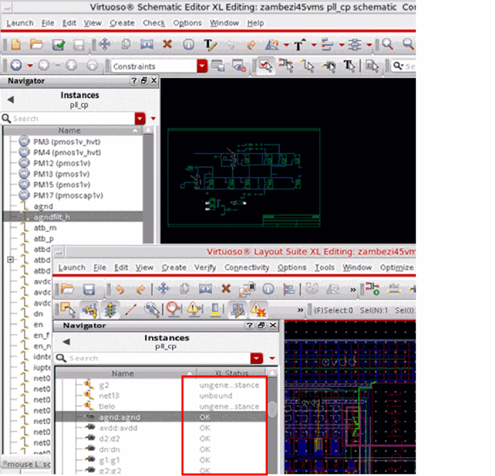

Make Cell – Transparent
The binder can recognize the instances and nets within a made cell instance and can bind them in a one-to-one correspondence with the schematic instances.
- Even when a made cell does not have instances and nets within, the made cell is defined as ‘transparent’. For route cells without pins, this allows shape-chasing for connectivity extraction without needing an increase in the extraction depth.
-
Set
makeCellTransparenttofalse, if you do not want the made cell instance to be transparent.
It is likely that a schematic instance in the design is bound to a layout instance that exists inside the transparent made cell instance. Layout XL supports cross-selecting such instances that exist within a transparent instance and their corresponding schematic instances, as shown in the figure below.

Related Topics
Return to top